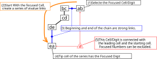
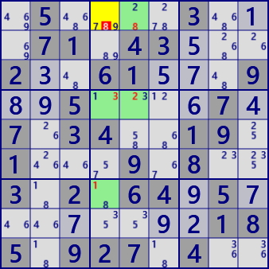
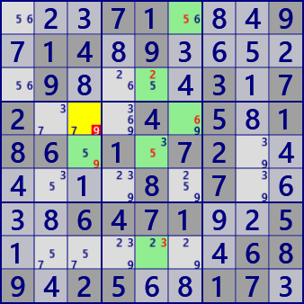

XY Chain
XY-Chainはbivalueの連結で生じるLockedを用いた解析アルゴリズムです。
次の図は XY-Chainのイメージです。着目数字をaとしてbivalueのセルから開始し、bivalueセルを連結します。
イメージ図では異なる数字で繋いでいますが、同じ数字が現れることもあります。連の先端のセルで開始セルと同じ数字a持つとします。
このとき開始セル・先端セルと同時に関係するセルでは、候補数字aが除外できます。

XY Chainの例です。右図には2つの連が重なっています。


.5....3...71.43...2..61...9..5....7.7.34..19.1...9.8..3.2.64.5........185.927.4..
...71...9.14.9.....9....3.72...4.5.186.1.72......8.7....6471..5.......689.25..17.